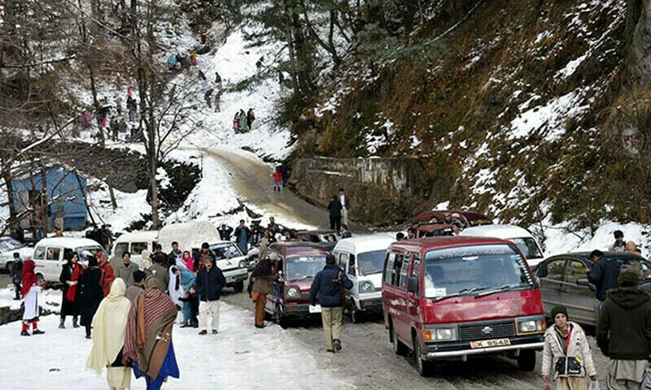

Alert for tourists heading to Murree in before snowfall
Alert for tourists heading to Murree in before snowfall
The caretaker government of Punjab on Saturday issued an alert for tourists heading to Murree and adjoining tourist attractions to enjoy snowfall.
The authorities have also set up facilitation centres aimed at guiding tourists during the snowfall. The measures have been taken to prevent a repeat of the 2022 tragedy when at least 22 people died in Murree after being standard in a snowstorm. The provincial government has warned tourists to take all the safety measures before departing for Murree. Three facilitation centres of the Tourism and Development Corporation of Punjab (TDCP) at Mall Road, Kashmir Point, and Bansra Gali are providing guidance to tourists to avoid incidents, a statement said on Saturday. These centres are working 24/7, ready to offer support to local and foreign tourists.
Pakistan has proof of India’s extraterritorial espionage: FO spokesperson
Foreign Office spokesperson Mumtaz Zahra Baloch has said that Pakistan had proof of India’s extraterritorial espionage.
Watch full story
“They [India] have killed people around the world, especially in South Asia. Pakistan has been a victim of India’s sponsored terrorism and we have proof of it,” she told Shaukat Piracha on Rubaroo.
For Baloch, Pakistan wanted to work with the regional countries to address challenges including poverty and stability, however, she said that the bullying attitude of India was a hurdle in stablisation of the region.
On terror attacks in Pakistan, she said that such attacks have increased in the country mostly perpetrated by suspects operating from across the border.
Young women’s “first aspiration” should be to have children

Young women’s “first aspiration” should be to have children, a senator with the right-wing party of Italian Prime Minister Giorgia Meloni said on Thursday, sparking outrage among opposition groups.
Meloni’s Brothers of Italy party has made it a priority to reverse the country’s declining birth rate and promote the traditional family. “My mother always used to tell me … you must always remember that you have the opportunity to do whatever you want, but you must never forget that your first aspiration must be to be a mother yourself,” senator Lavinia Mennuni said. Mennuni, who was speaking on a talk show on the La7 TV channel next to a Catholic archbishop, said Italian and Vatican institutions had to make maternity “cool” again and encourage young people to marry early and start families. “There is a need, let’s say a mission, because I think it is a beautiful thing, (for women) to bring children into the world who will be the future citizens, the future Italians,” said the 47-year-old lawmaker who has three children herself. Senator Raffaella Paita, from the centrist Italia Viva party, said such comments
Kajol’s stunning portrait ignites speculation on Hollywood debut
My Name is Khan famed actress Kajol shared her AI-generated image of the black gown with her hair rolled up giving her a killer look, that received claps from fans and made them curious about her new venture.
Nevertheless, it is her Hannible Avatar look that made her fans ambiguous, is she planning to Hollywood’s commencement?
The actor gave the captions to her snap on Instagram, I ended up taking the thought home. Worth it! PS- I do like the look, might try it someday IRL (In Real Life)
.